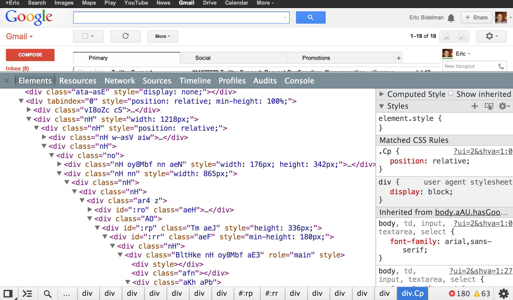

KleekampNF@state.gov
@nathankleekamp
Domenic Denicola
Natalia Berdys
Vince Allen
Addy Osmani
Brendan Eich
And about 48 other...
Speaker: Domenic Denicola
New features require years of standardization, implementation, dev feedback, and iteration.
“We prefer to enable feature development and iteration in JavaScript, followed by implementation in browsers and standardization.”
This is Google's model with the Polymer Project, Google's web components polyfill.
“Initially, these core features are enabled as polyfills but go away over time as browsers implement them.”
Speaker: Natalia Berdys
Web accessibility: We usually picture someone with a physical disability.
asm.js and the obligatory video of the Unreal Engine running on FF (with Doom running within the game).
ECMAScript is planning to move to an annual release cycle
Peter Gasston
Mike West
Nicole Sullivan
Razvan Caliman
Chris Eppstein
And the rest were great, too!
Watch the videos. What follows are ridiculously fast (and mostly insufficient) summaries of the “most important” talks.
Speaker: Peter Gasston
Web components are “the secret to ultimate power.”
Web Components consist of:
Browser vendors have been holding out on us!
So instead of this:
Source: http://www.html5rocks.com/en/tutorials/webcomponents/customelements/
We could have this:
Feelin' this Web Components thing.
Heard of it?
...
Source: http://www.html5rocks.com/en/tutorials/webcomponents/customelements/
Browser support: Chrome Canary, Firefox
All very experimental & subject to change.
It's happening and has broad support by browser vendors.
Polyfills: Polymer Project & Brick
Speaker: Mike West
The other “S” is for “styling”
More capable than you might think. It's possible to steal sensitive data (like passwords!) using CSS.
Mitigate by using W3C's new “Content Security Policy” spec
It allows you to whitelist sources in a Content-Security-Policy HTTP header.
Speaker: Razvan Caliman
Alice & Wonderland demo
A lot of this stuff is really new. And won't be ready for general use in a year or two.
One thing is very clear: Browser innovation is happing faster and faster.
State has to do a better job upgrading it's browsers.
Because anyone at State who uses a major service on the Internet will be effected, especially PD folks.
Chrome should be our default browser